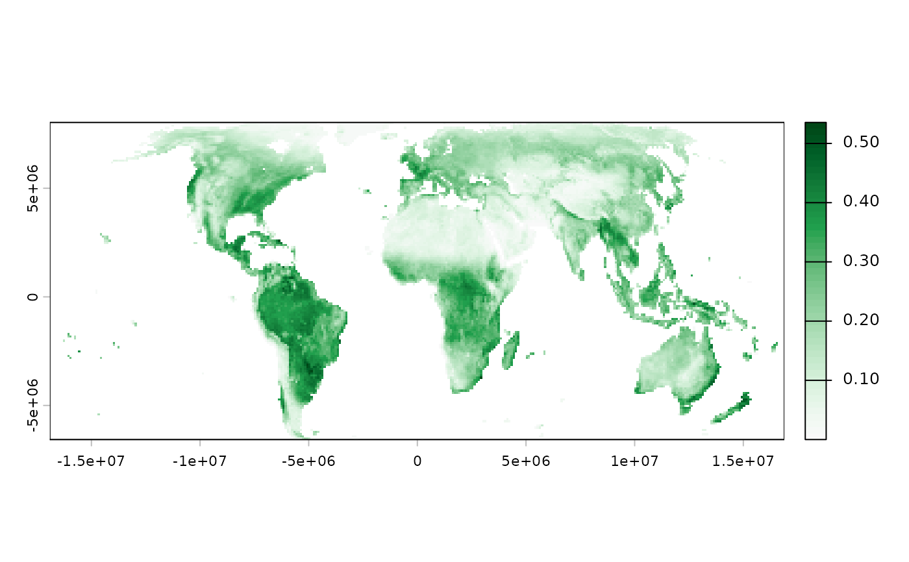

sptrends is built around one idea: spatiotemporal trend analysis of
gridded (raster) data – a stack of layers over the same spatial grid,
one layer per time step. example_data() gives you a real dataset in
exactly that shape, bundled with the package, so every function's
@examples, every vignette, and your own first attempts at the
package have something real to run on without downloading anything.
Arguments
- path
Character or
NULL. IfNULL(default), lists every bundled example file (as paths relative to the package'sextdatadirectory) – use this first, to see what is available, before deciding what to ask for. If a specific relative path from that listing (e.g."vhp_ndvi", the whole dataset folder, or one particular.tiffile inside it), the full absolute path to it on this machine.
Value
If path = NULL, a character vector of relative paths.
Otherwise, a single absolute file path (as from system.file()).
Errors if the requested path does not exist.
Details
The bundled dataset is annual mean NDVI (Normalized Difference
Vegetation Index) – derived from the NOAA STAR Blended Vegetation
Health Product, 1982-2023, global land 100 km Eckert IV equal-area
grid, ~3.5 MB – a folder of one GeoTIFF per year, which is exactly
the layout read_ordered_stack() expects. So example_data()
doubles as a realistic example of that function's intended use (a
folder of yearly rasters), not just a shortcut to a pre-loaded R
object. NDVI trend analysis (vegetation "greening" and "browning")
is also the motivating application of the True Significant Trends
workflow itself – see the primary reference in ?workflow_tst.
Function type: Support function – locates package example files; it performs no statistical analysis.
Typical use
example_data("vhp_ndvi")
|
read_ordered_stack()
|
bundled annual raster time series
|
workflow_tst(), workflow_rta(), or workflow_trends()Call example_data() without an argument first to list all bundled
paths.
Methodological details
Data source and licence
Derived from the Blended Vegetation Health Product (Blended-VHP),
provided by NOAA's Center for Satellite Applications and Research
(STAR) – see example_data("vhp_ndvi/Readme.txt") for full
provenance, processing steps, and the required acknowledgement. This
derived subset is for demonstration purposes only; it is not a
substitute for the original product, which has global land coverage
at the original 4 km resolution, weekly observations, and additional
variables (brightness temperature, Vegetation Condition Index,
Vegetation Health Index).
Limitations
The bundled raster is a small, coarsened demonstration dataset and must not be treated as a replacement for the original NOAA product.
Quality assurance
Tests verify file listing, path resolution, informative failure for
absent paths, and end-to-end compatibility of the bundled dataset
with read_ordered_stack(). See ?sptrends for the package-wide
release-check protocol.
References
NOAA Center for Satellite Applications and Research (STAR). Blended Vegetation Health Product (Blended-VHP). https://www.star.nesdis.noaa.gov/smcd/emb/vci/VH/vh_ftp.php
See also
Other example data functions:
sim_trend_stack()
Examples
# example_data() with no arguments lists every file bundled with
# the package, so you can see what is available before using any of
# it -- you do not need to know the file names in advance.
example_data()
#> [1] "vhp_ndvi/Readme.txt"
#> [2] "vhp_ndvi/VHP_SMN_annual_ndvi_1982.tif"
#> [3] "vhp_ndvi/VHP_SMN_annual_ndvi_1983.tif"
#> [4] "vhp_ndvi/VHP_SMN_annual_ndvi_1984.tif"
#> [5] "vhp_ndvi/VHP_SMN_annual_ndvi_1985.tif"
#> [6] "vhp_ndvi/VHP_SMN_annual_ndvi_1986.tif"
#> [7] "vhp_ndvi/VHP_SMN_annual_ndvi_1987.tif"
#> [8] "vhp_ndvi/VHP_SMN_annual_ndvi_1988.tif"
#> [9] "vhp_ndvi/VHP_SMN_annual_ndvi_1989.tif"
#> [10] "vhp_ndvi/VHP_SMN_annual_ndvi_1990.tif"
#> [11] "vhp_ndvi/VHP_SMN_annual_ndvi_1991.tif"
#> [12] "vhp_ndvi/VHP_SMN_annual_ndvi_1992.tif"
#> [13] "vhp_ndvi/VHP_SMN_annual_ndvi_1993.tif"
#> [14] "vhp_ndvi/VHP_SMN_annual_ndvi_1994.tif"
#> [15] "vhp_ndvi/VHP_SMN_annual_ndvi_1995.tif"
#> [16] "vhp_ndvi/VHP_SMN_annual_ndvi_1996.tif"
#> [17] "vhp_ndvi/VHP_SMN_annual_ndvi_1997.tif"
#> [18] "vhp_ndvi/VHP_SMN_annual_ndvi_1998.tif"
#> [19] "vhp_ndvi/VHP_SMN_annual_ndvi_1999.tif"
#> [20] "vhp_ndvi/VHP_SMN_annual_ndvi_2000.tif"
#> [21] "vhp_ndvi/VHP_SMN_annual_ndvi_2001.tif"
#> [22] "vhp_ndvi/VHP_SMN_annual_ndvi_2002.tif"
#> [23] "vhp_ndvi/VHP_SMN_annual_ndvi_2003.tif"
#> [24] "vhp_ndvi/VHP_SMN_annual_ndvi_2004.tif"
#> [25] "vhp_ndvi/VHP_SMN_annual_ndvi_2005.tif"
#> [26] "vhp_ndvi/VHP_SMN_annual_ndvi_2006.tif"
#> [27] "vhp_ndvi/VHP_SMN_annual_ndvi_2007.tif"
#> [28] "vhp_ndvi/VHP_SMN_annual_ndvi_2008.tif"
#> [29] "vhp_ndvi/VHP_SMN_annual_ndvi_2009.tif"
#> [30] "vhp_ndvi/VHP_SMN_annual_ndvi_2010.tif"
#> [31] "vhp_ndvi/VHP_SMN_annual_ndvi_2011.tif"
#> [32] "vhp_ndvi/VHP_SMN_annual_ndvi_2012.tif"
#> [33] "vhp_ndvi/VHP_SMN_annual_ndvi_2013.tif"
#> [34] "vhp_ndvi/VHP_SMN_annual_ndvi_2014.tif"
#> [35] "vhp_ndvi/VHP_SMN_annual_ndvi_2015.tif"
#> [36] "vhp_ndvi/VHP_SMN_annual_ndvi_2016.tif"
#> [37] "vhp_ndvi/VHP_SMN_annual_ndvi_2017.tif"
#> [38] "vhp_ndvi/VHP_SMN_annual_ndvi_2018.tif"
#> [39] "vhp_ndvi/VHP_SMN_annual_ndvi_2019.tif"
#> [40] "vhp_ndvi/VHP_SMN_annual_ndvi_2020.tif"
#> [41] "vhp_ndvi/VHP_SMN_annual_ndvi_2021.tif"
#> [42] "vhp_ndvi/VHP_SMN_annual_ndvi_2022.tif"
#> [43] "vhp_ndvi/VHP_SMN_annual_ndvi_2023.tif"
# \donttest{
# Passing "vhp_ndvi" (the folder name from the listing above) gives
# the full path to that folder on your machine. read_ordered_stack()
# reads every GeoTIFF inside it and stacks them into one multi-layer
# raster, one layer per year, already sorted chronologically -- this
# is the "gridded time series" shape sptrends is built around.
# report = FALSE just turns off the automatic year-order check plot,
# to keep this example quiet; leave it on (the default) when
# exploring interactively, as a sanity check on the file order.
# Wrapped in \donttest{} rather than run unconditionally: reading
# all 42 real GeoTIFFs takes several seconds, unlike every other
# example in this package, which uses small synthetic rasters --
# still runs when a user tries this example directly, just not
# timed as part of R CMD check's own example suite.
r <- read_ordered_stack(example_data("vhp_ndvi"), report = FALSE)
#> Temporal order auto-detected with pattern '(19[0-9]{2}|20[0-9]{2})'.
#> Temporal order verification (mandatory, cannot be skipped):
#> stack_position detected_number file
#> 1 1982 VHP_SMN_annual_ndvi_1982.tif
#> 2 1983 VHP_SMN_annual_ndvi_1983.tif
#> 3 1984 VHP_SMN_annual_ndvi_1984.tif
#> 4 1985 VHP_SMN_annual_ndvi_1985.tif
#> 5 1986 VHP_SMN_annual_ndvi_1986.tif
#> 6 1987 VHP_SMN_annual_ndvi_1987.tif
#> 7 1988 VHP_SMN_annual_ndvi_1988.tif
#> 8 1989 VHP_SMN_annual_ndvi_1989.tif
#> 9 1990 VHP_SMN_annual_ndvi_1990.tif
#> 10 1991 VHP_SMN_annual_ndvi_1991.tif
#> 11 1992 VHP_SMN_annual_ndvi_1992.tif
#> 12 1993 VHP_SMN_annual_ndvi_1993.tif
#> 13 1994 VHP_SMN_annual_ndvi_1994.tif
#> 14 1995 VHP_SMN_annual_ndvi_1995.tif
#> 15 1996 VHP_SMN_annual_ndvi_1996.tif
#> 16 1997 VHP_SMN_annual_ndvi_1997.tif
#> 17 1998 VHP_SMN_annual_ndvi_1998.tif
#> 18 1999 VHP_SMN_annual_ndvi_1999.tif
#> 19 2000 VHP_SMN_annual_ndvi_2000.tif
#> 20 2001 VHP_SMN_annual_ndvi_2001.tif
#> 21 2002 VHP_SMN_annual_ndvi_2002.tif
#> 22 2003 VHP_SMN_annual_ndvi_2003.tif
#> 23 2004 VHP_SMN_annual_ndvi_2004.tif
#> 24 2005 VHP_SMN_annual_ndvi_2005.tif
#> 25 2006 VHP_SMN_annual_ndvi_2006.tif
#> 26 2007 VHP_SMN_annual_ndvi_2007.tif
#> 27 2008 VHP_SMN_annual_ndvi_2008.tif
#> 28 2009 VHP_SMN_annual_ndvi_2009.tif
#> 29 2010 VHP_SMN_annual_ndvi_2010.tif
#> 30 2011 VHP_SMN_annual_ndvi_2011.tif
#> 31 2012 VHP_SMN_annual_ndvi_2012.tif
#> 32 2013 VHP_SMN_annual_ndvi_2013.tif
#> 33 2014 VHP_SMN_annual_ndvi_2014.tif
#> 34 2015 VHP_SMN_annual_ndvi_2015.tif
#> 35 2016 VHP_SMN_annual_ndvi_2016.tif
#> 36 2017 VHP_SMN_annual_ndvi_2017.tif
#> 37 2018 VHP_SMN_annual_ndvi_2018.tif
#> 38 2019 VHP_SMN_annual_ndvi_2019.tif
#> 39 2020 VHP_SMN_annual_ndvi_2020.tif
#> 40 2021 VHP_SMN_annual_ndvi_2021.tif
#> 41 2022 VHP_SMN_annual_ndvi_2022.tif
#> 42 2023 VHP_SMN_annual_ndvi_2023.tif
#> Stack built: 42 layers, 146 x 338 cells.
#> >> [read_ordered_stack()] elapsed: 0.14 s
# nlyr() ("number of layers") confirms how many years came through --
# 42, one per year from 1982 to 2023.
terra::nlyr(r)
#> [1] 42
# r[[1]] is the first layer (year 1982) on its own. terra's default
# colour scheme is not designed for a vegetation index, so we ask for
# a better one: grDevices::hcl.colors(50, "Greens 3") gives 50 shades
# from pale to deep green, matching how NDVI maps are normally read
# (higher NDVI, more/denser vegetation).
terra::plot(r[[1]], col = rev(grDevices::hcl.colors(50, "Greens 3")))

# }